Past winners & competitors
Every year, the region’s best student stylists — and the schools behind them — earn their place here.
Returning competitors
Some of the region’s best came back for another shot — and climbed the podium.
Cuyahoga Valley Career Center
2025 · competed → 2026 · 3rd placeR.G. Drage Career Technical Center
2025 · competed → 2026 · competedLorain County JVS
2024 · competed → 2025 · 3rd place2026
Year three moved to the Don Umerley Civic Center in Rocky River. Twenty-three instructor-nominated students from twelve programs took on two timed rounds — a haircut and style, then a second cut of their choice — in front of judges, educators, families and FOX 8 Cleveland. Winners chose their prize: cash or a professional tool package of equal value.
All 23 2026 competitors
12 participating schools
- A-Tech (Ashtabula) · 2 students
- Auburn Career Center · 1 student
- Cuyahoga Valley Career Center · 1 student
- EHOVE Career Center (Adult Education) · 3 students
- Gerber Akron Beauty School · 1 student
- Glen Oak High School · 4 students
- Heartland Technical · 3 students
- Lorain County JVS · 1 student
- R.G. Drage Career Technical Center · 1 student
- Timken High School · 2 students
- Wayne County Schools Career Center · 1 student
- Wayne County Schools Career Center (Adult Education) · 3 students
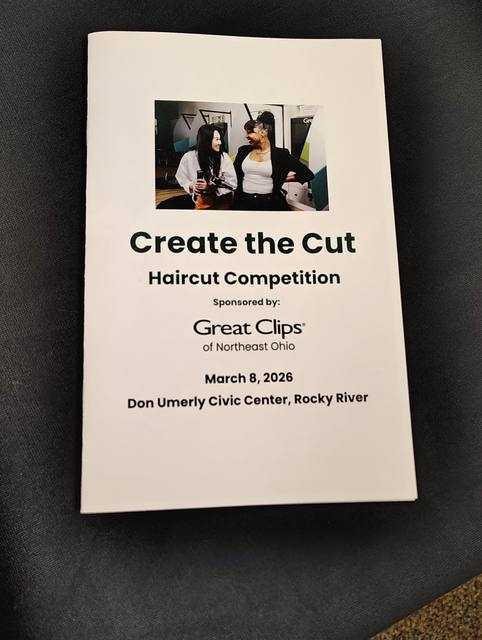
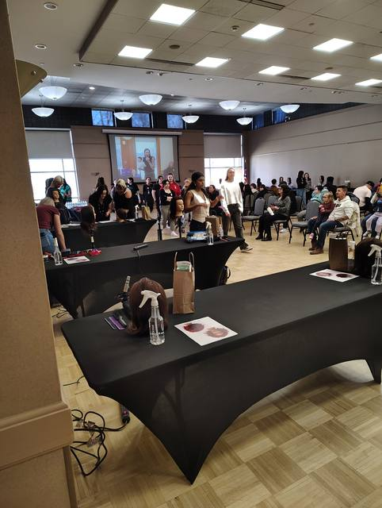
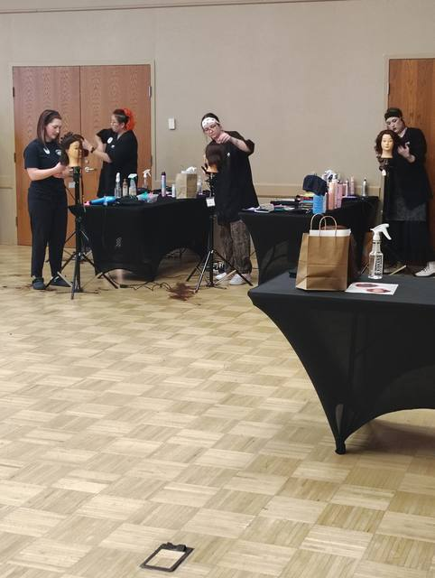
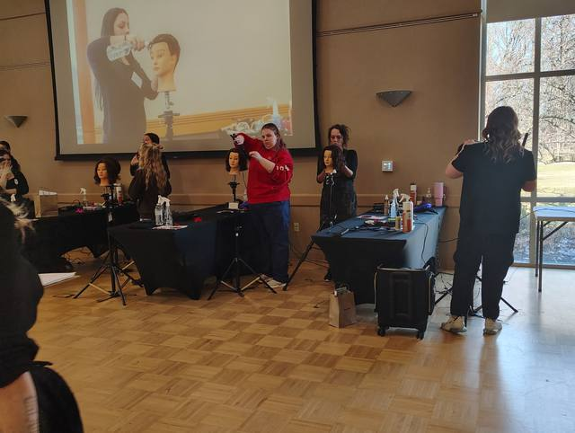
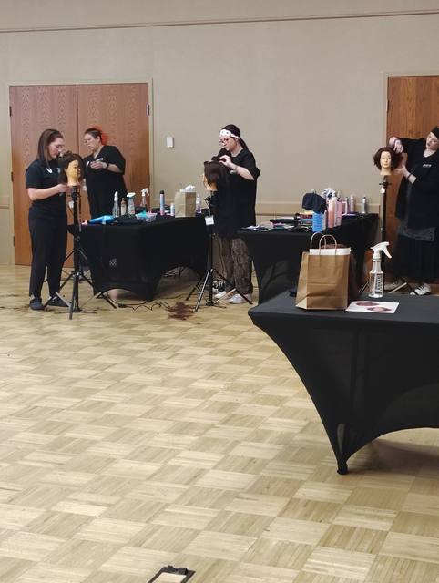
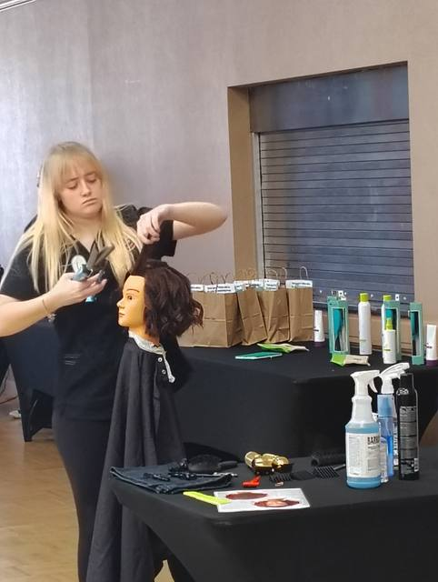
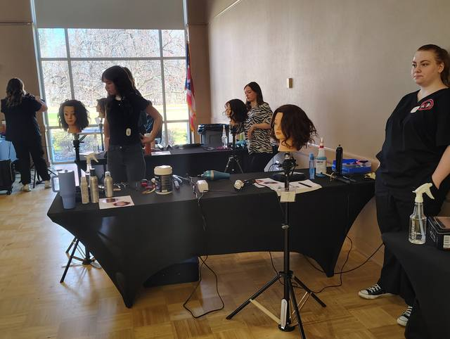
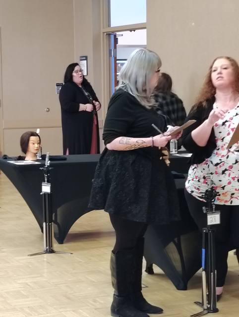
2025
Thirty-three students from public and private cosmetology and barbering programs across Northeast Ohio packed the Solon Community Center. Each program could send two students, and the top three walked away with oversized checks — and matching gifts for their schools.
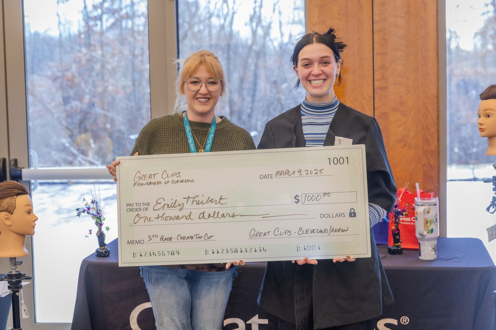
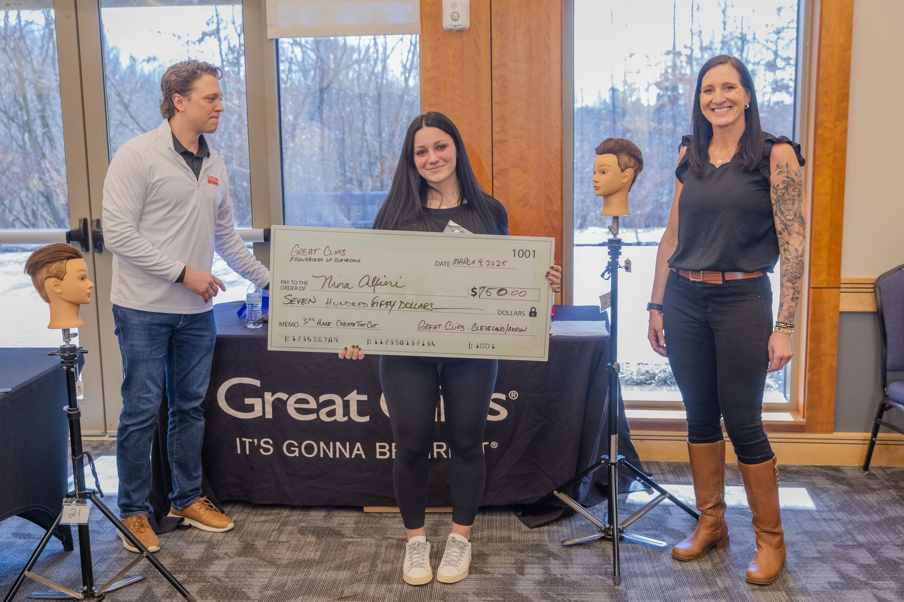
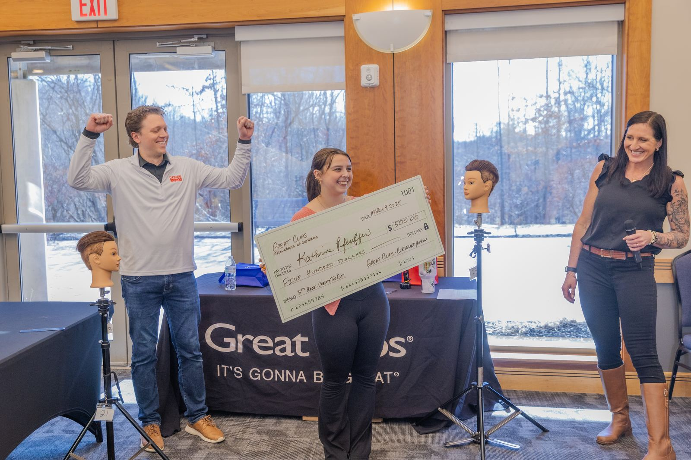
All 33 2025 competitors
16 participating schools
- A-Tech (Ashtabula) · 4 students
- All-State Barber College · 1 student
- Auburn Career Center · 3 students
- Cuyahoga Valley Career Center · 2 students
- Cuyahoga Valley Career Center (Adult Education) · 2 students
- EHOVE Career Center (Adult Education) · 2 students
- Elite (Ashland) · 1 student
- Glen Oak High School · 4 students
- Inner State Beauty School · 1 student
- Lorain County JVS · 1 student
- Maplewood Career Center · 3 students
- Medina County Career Center · 1 student
- National Beauty College · 2 students
- R.G. Drage Career Technical Center · 2 students
- Raphael's School of Beauty Culture · 1 student
- Timken High School · 3 students
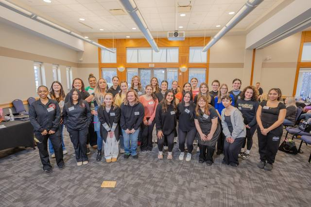
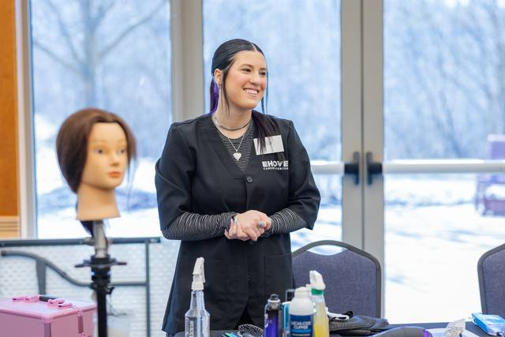
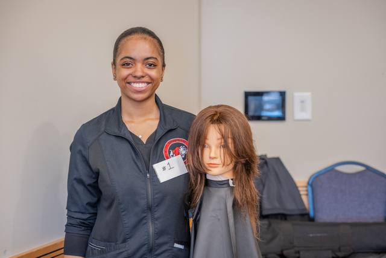
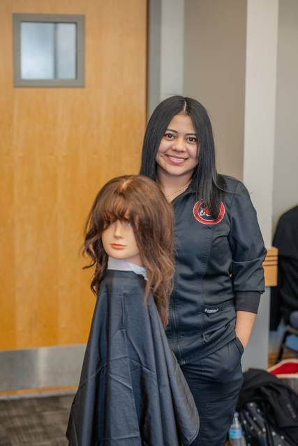
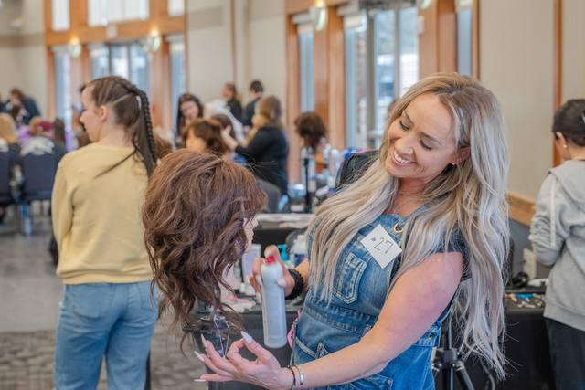
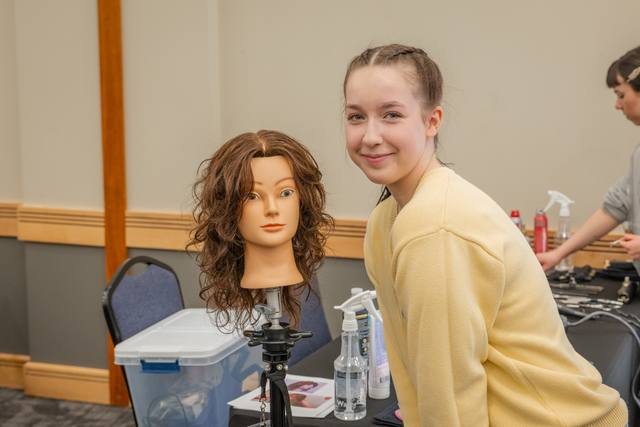
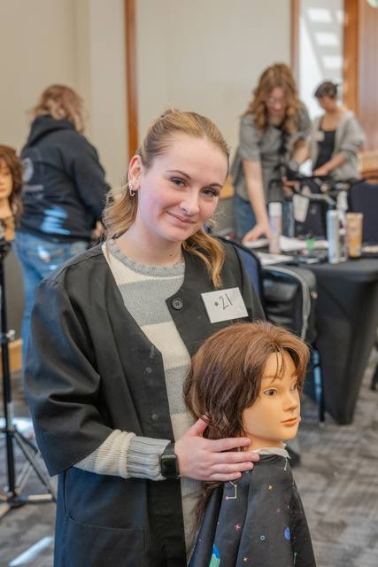
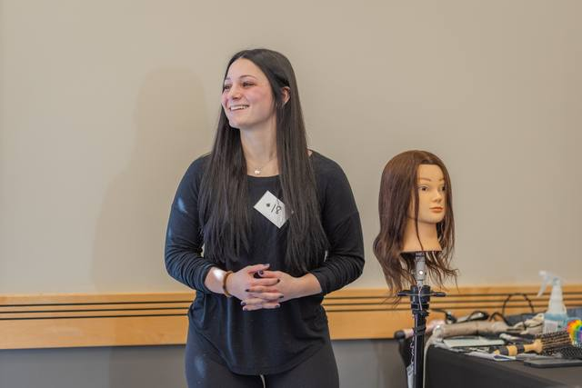
2024
The debut. Great Clips franchisees across Cleveland, Akron and Canton teamed up to launch a hands-on haircutting competition for the region’s cosmetology and barbering students. Eighteen nominated students from eleven programs took on two judged mannequin cuts, and the top three earned prize packages — professional tool kits plus gifts for their schools. A new tradition was born.
All 18 2024 competitors
11 participating schools
- A-Tech (Ashtabula) · 1 student
- All-State Barber College · 2 students
- Auburn Career Center · 2 students
- Buckeye Adult Ed · 2 students
- Buckeye High School · 1 student
- EHOVE Career Center (Adult Education) · 1 student
- Gerber Akron Beauty School · 2 students
- Glen Oak High School · 2 students
- Lorain County JVS · 2 students
- Northern Institute of Cosmetology · 2 students
- Wayne County Schools Career Center (Adult Education) · 1 student
Real money for real talent.
Every dollar is funded by local Great Clips franchisees — going straight to student winners and matched, dollar for dollar, to the schools that trained them — as cash or professional tools.
Includes student prizes and matching school gifts awarded 2024–2026.
Your name could be next.
Submit your interest, then ask your cosmetology instructor to nominate you.